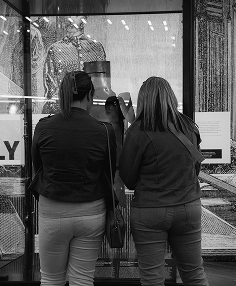
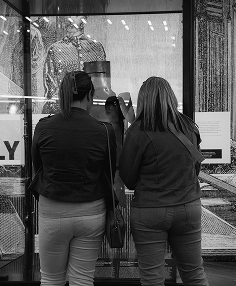
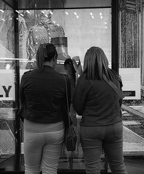

SONDER
the strong feeling of realizing that every person you see has
their own life story in which they are the most important person.

the strong feeling of realizing that every person you see has
their own life story in which they are the most important person.